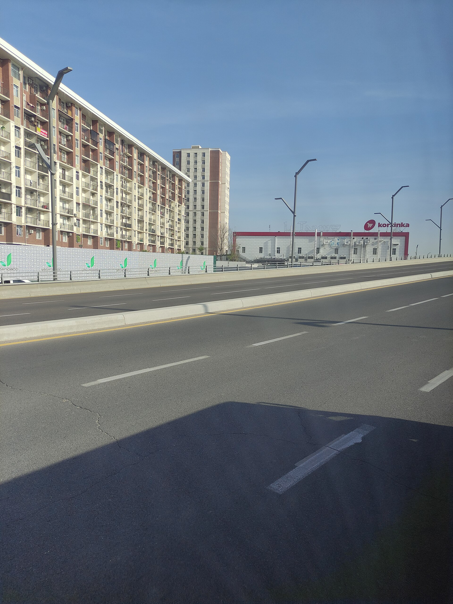

O‘zbekiston iqtisodiyoti yetti oyda: chakana savdo 20,2 foizga, bozor xizmatlari 16,7 foizga o‘sdi
Statistik ma’lumotlarga ko‘ra, iste’mol talabi va xizmatlar sektori o‘sishning asosiy manbai bo‘ldi. Faoliyat ko‘rsatayotgan korxonalar soni 509 800 dan oshdi.

O‘zbekistonning 2026-yil yanvar–iyul oylaridagi iqtisodiy ko‘rsatkichlari e’lon qilindi. Ma’lumotlarga ko‘ra, o‘sishning asosiy manbalari iste’mol faolligi, xizmatlar sektori va infratuzilma tarmoqlari bo‘ldi.
Tarmoqlar bo‘yicha o‘sish
- Chakana savdo: +20,2%
- Bozor xizmatlari: +16,7%
- Qurilish: +12,9%
- Tashqi savdo: +8,1%
- Sanoat ishlab chiqarish: +7,9%
Chakana savdodagi 20,2 foizlik o‘sish ko‘rsatkichlar orasida eng yuqori bo‘ldi. Iqtisodchilar buni aholi real daromadlarining ortishi, iste’mol kreditlarining kengayishi va raqamli to‘lov tizimlarining rivojlanishi bilan izohlamoqda.
Narxlar
Iste’mol narxlari indeksi 2025-yil dekabriga nisbatan 103,2 foizni tashkil etdi — ya’ni yetti oy ichida narxlar taxminan 3,2 foizga oshdi.
Iqtisodiyot vazirligi 2026-yil yakuni bo‘yicha o‘rtacha inflatsiyani 6,5 foiz darajasida bashorat qilmoqda; bu avvalgi 7 foizlik prognozdan past. Ishsizlik darajasi 4,5 foiz atrofida kutilmoqda.
Korxonalar soni
2026-yil 1-avgust holatiga mamlakatda faoliyat ko‘rsatayotgan korxona va tashkilotlar soni 509 800 dan oshdi (fermer va dehqon xo‘jaliklari hisobga olinmagan holda).
Yillik prognoz
2026-yil iyul oyida hukumat yillik iqtisodiy o‘sish prognozini 8,1 foizga oshirgan edi. Yil yakunida nominal yalpi ichki mahsulot taxminan 180 milliard dollarga yetishi kutilmoqda.
2026-yilning birinchi choragida YaIM o‘sishi 8,7 foizni tashkil etgandi.
O‘sishning tarkibi haqida
Iste’mol va qurilish hisobiga ta’minlanadigan o‘sish qisqa muddatda yuqori ko‘rsatkich beradi, ammo uning barqarorligi bir necha omilga bog‘liq bo‘ladi: kredit sifatiga, import hajmiga va eksport daromadlarining o‘sishiga.
Chet eldan keladigan pul o‘tkazmalari iste’mol talabining muhim manbalaridan biri bo‘lib qolmoqda: 2026-yilning birinchi choragida O‘zbekistonga 3,8 milliard dollar o‘tkazma kelgan, bu bir yil avvalgiga nisbatan 13 foizga ko‘p.
Shu bilan birga Rossiyadagi migratsiya qoidalarining qattiqlashuvi bu oqimga bosim o‘tkazishi mumkin: 2026-yilning birinchi yarmida Markaziy Osiyo davlatlari fuqarolarining Rossiyaga ish maqsadida kirishi 15 foizga kamaydi.
Investitsiya fon
2026-yil davomida mamlakat bir nechta yirik iqtisodiy tashabbusni e’lon qildi: Toshkent xalqaro moliya markazi tashkil etildi, 8 milliard dollarlik davlat aktivlari xususiylashtirish ro‘yxatiga kiritildi, energetikada esa yil oxirigacha 6,7 GVt yangi quvvat qo‘shish rejalashtirildi.
Yaponiya bilan 12 milliard dollarlik 75 ta loyiha portfeli, Janubiy Koreya bilan esa 13 ta hujjat imzolandi.
Eslatma
O‘sish manbalarini o‘qish
Chakana savdo va bozor xizmatlaridagi yuqori o‘sish iste’mol talabining kuchliligini ko‘rsatadi. Iqtisodchilar buni uch omil bilan izohlaydi: real daromadlarning ortishi, iste’mol kreditlarining kengayishi va raqamli to‘lov tizimlarining rivojlanishi.
Iste’mol kreditlari hisobiga ta’minlanadigan o‘sish qisqa muddatda yuqori ko‘rsatkich beradi, ammo u qarz yukining ortishiga olib kelishi mumkin. Shu sababli markaziy banklar odatda uy xo‘jaliklarining qarz darajasini alohida kuzatadi.
Qurilishdagi 12,9 foizlik o‘sish esa davlat infratuzilma dasturlari va turar-joy bozori faolligi bilan bog‘liq bo‘lishi mumkin.
Sanoat va tashqi savdo
Sanoat ishlab chiqarishning 7,9 foizlik o‘sishi umumiy ko‘rsatkichdan pastroq. Bu iqtisodiyotdagi o‘sishning asosan xizmatlar va savdo hisobiga shakllanayotganini ko‘rsatadi.
Tashqi savdo 8,1 foizga o‘sdi. Mamlakatning eng yirik savdo sherigi — Xitoy; 2026-yilning yanvar–iyun oylarida tovar aylanmasi 9,5 milliard dollarni tashkil etdi. Rossiya 7 milliard, Qozog‘iston esa 2,8 milliard dollar bilan keyingi o‘rinlarda turadi.
Eksport tarkibida oltin, tabiiy gaz, to‘qimachilik, meva-sabzavot va mis salmoqli o‘rin egallaydi.
Inflatsiya dinamikasi
Iste’mol narxlari indeksi 2025-yil dekabriga nisbatan 103,2 foizni tashkil etdi, ya’ni yetti oy ichida narxlar taxminan 3,2 foizga oshdi.
Iqtisodiyot vazirligi yil yakunida o‘rtacha inflatsiyani 6,5 foiz darajasida bashorat qilmoqda; bu avvalgi 7 foizlik prognozdan past. Taqqoslash uchun, Qirg‘izistonda yillik inflatsiya 11 foizdan yuqori bo‘lib qoldi.
Inflatsiyaning nisbatan past bo‘lishi pul-kredit siyosati va ichki narx tartibga solish choralari bilan bog‘lanadi. Energiya tariflarining bosqichma-bosqich liberallashtirilishi esa keyingi davrlarda qo‘shimcha bosim yaratishi mumkin.
Biznes muhiti
2026-yil 1-avgust holatiga mamlakatda faoliyat ko‘rsatayotgan korxona va tashkilotlar soni 509 800 dan oshdi. Bu ko‘rsatkichga fermer va dehqon xo‘jaliklari kiritilmagan.
Korxonalar sonining o‘sishi odatda tadbirkorlik faolligining ko‘rsatkichi sifatida qaraladi, ammo u yangi tashkil etilgan va real faoliyat yuritayotgan korxonalar o‘rtasidagi farqni ko‘rsatmaydi.
Pul o‘tkazmalari
Chet eldan keladigan pul o‘tkazmalari iste’mol talabining muhim manbalaridan biri bo‘lib qolmoqda. 2026-yilning birinchi choragida O‘zbekistonga chegara orqali 3,8 milliard dollar o‘tkazma kelgan, bu bir yil avvalgiga nisbatan 13 foizga ko‘p.
Umumiy o‘tkazmalarda Rossiya ulushi 77,6 foizdan 72,4 foizga tushdi — bu daromad manbalarining asta-sekin diversifikatsiya bo‘layotganidan dalolat beradi.
Ayni paytda Rossiyadagi migratsiya qoidalarining qattiqlashuvi bu oqimga bosim o‘tkazishi mumkin: 2026-yilning birinchi yarmida Markaziy Osiyo davlatlari fuqarolarining Rossiyaga ish maqsadida kirishi 15 foizga kamaydi.
Yillik prognoz
2026-yil iyul oyida hukumat yillik iqtisodiy o‘sish prognozini 8,1 foizga oshirgan edi. Yil yakunida nominal yalpi ichki mahsulot taxminan 180 milliard dollarga yetishi kutilmoqda.
2026-yilning birinchi choragida YaIM o‘sishi 8,7 foizni tashkil etgandi.
Investitsiya tashabbuslari
2026-yil davomida mamlakat bir nechta yirik iqtisodiy tashabbusni e’lon qildi. Iyul oyida Toshkent xalqaro moliya markazi to‘g‘risidagi konstitutsiyaviy qonun imzolandi; markaz ingliz huquqiga asoslangan maxsus rejimni va uzoq muddatli soliq imtiyozlarini nazarda tutadi.
8-sentabr kuni 8 milliard dollarlik davlat aktivlarini sotuvga chiqarish rejasi e’lon qilindi; ro‘yxatga “Turonbank”, Xalqaro biznes markazi va “Uzexpocentre” kiritildi.
Energetikada yil oxirigacha 6,7 GVt yangi quvvat qo‘shish rejalashtirilgan; uning tarkibida 2,8 GVt quyosh va 470 MVt shamol quvvatlari bor.
Xalqaro hamkorlik
11-sentabr kuni Toshkentda O‘zbekiston–Yaponiya iqtisodiy hamkorlik qo‘mitalarining 18-yig‘ilishi bo‘lib o‘tdi; unda 12 milliard dollarlik 75 ta loyiha portfeli taqdim etildi.
13–16-sentabr kunlari Prezident Janubiy Koreyaga davlat tashrifi bilan bordi; Seulda 13 ta hujjat imzolandi.
8-sentabrda esa Belgradda Serbiya bilan strategik sheriklik o‘rnatildi va 20 ta hujjat imzolandi.
Valyuta rejimi
15-sentabrdan boshlab ichki valyuta bozorida kursni shakllantirish va e’lon qilish amaliyoti takomillashtirilishi ma’lum qilindi.
Valyuta kursi rejimi iqtisodiyot uchun muhim ko‘rsatkich hisoblanadi: u import narxlariga, eksport raqobatbardoshligiga va pul o‘tkazmalarining so‘mdagi qiymatiga ta’sir qiladi.
Statistikani o‘qish
Keltirilgan raqamlar oraliq statistika hisoblanadi va yil yakunida qayta ko‘rib chiqilishi mumkin. Milliy statistika idoralari odatda ma’lumotlarni bir necha marta aniqlashtiradi.
Shuningdek, foizdagi o‘sish baza yiliga bog‘liq: past bazadan hisoblangan ko‘rsatkichlar yuqori ko‘rinishi mumkin, lekin mutlaq hajmdagi o‘zgarish kichik bo‘lishi ehtimoldan xoli emas.
Keltirilgan raqamlar oraliq statistika hisoblanadi va yil yakunida qayta ko‘rib chiqilishi mumkin. Shuningdek, foizdagi o‘sish baza yiliga bog‘liq bo‘lib, past bazadan hisoblangan ko‘rsatkichlar yuqori ko‘rinishi mumkin.